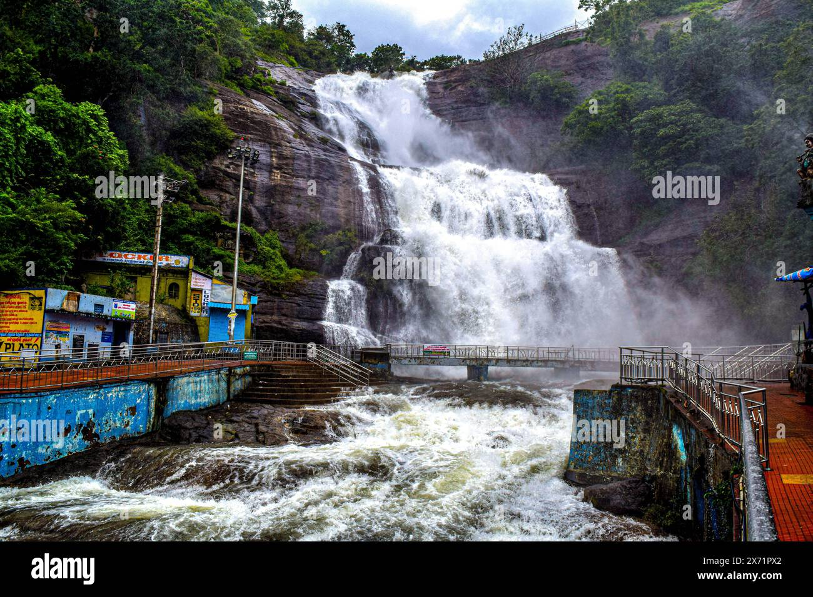
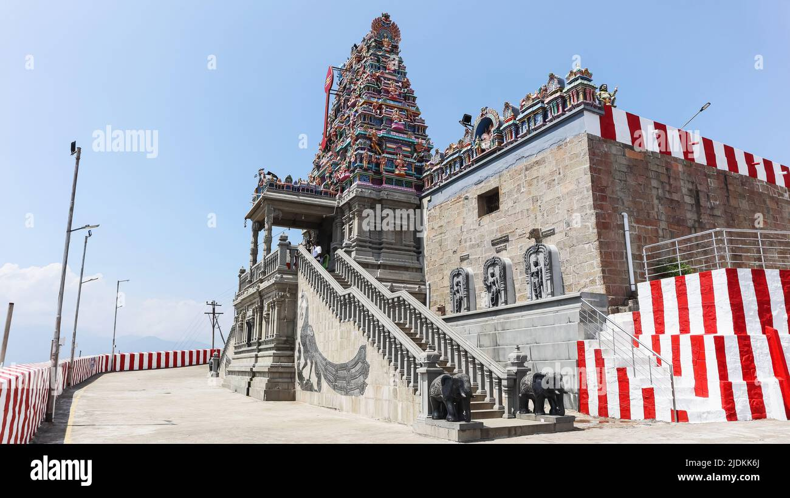
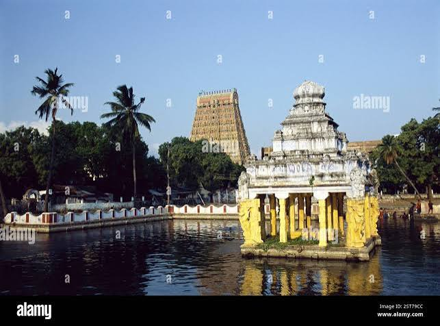
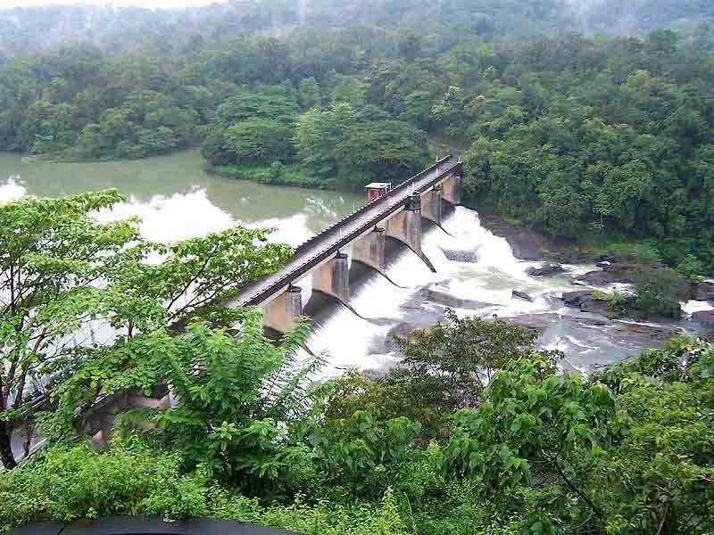
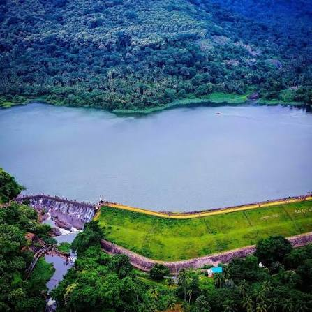

Welcome to Gallery
The Land of Waterfalls, Temples, Nature, and Rich Cultural Heritage
Tenkasi is one of the most beautiful districts in Tamil Nadu, famous for its breathtaking waterfalls, ancient temples, lush green Western Ghats, and pleasant climate. It is a perfect blend of natural beauty, history, spirituality, and agriculture, attracting thousands of tourists every year.
Courtallam Main Falls Kasi Viswanathar Temple Western Ghats Green landscapes
📖 District Introduction
Tenkasi District is located in the southern part of Tamil Nadu and was officially formed on 22 November 2019 by separating it from Tirunelveli District. The district headquarters is Tenkasi city. Known as the "Spa of South India," Tenkasi is famous for Courtallam Falls, scenic hills, fertile agricultural lands, and historic temples. Tourism, agriculture, trade, and small-scale industries play an important role in the district's economy. Tenkasi is also well connected by road and railway, making it an important destination for visitors and pilgrims.
🌊 Waterfalls of Tenkasi
Tenkasi District is famous for its beautiful waterfalls located in the Western Ghats. These waterfalls attract thousands of tourists every year because of their natural beauty, fresh mountain water, and cool climate.
Courtallam is known as the "Spa of South India" due to its medicinal waterfalls. The waterfalls are surrounded by lush green forests, making them one of the most popular tourist attractions in Tamil Nadu.
🌊 Famous Waterfalls

| Waterfall | Location |
|---|---|
| Main Falls | Courtallam |
| Five Falls | Courtallam |
| Old Courtallam Falls | Courtallam |
| Tiger Falls | Courtallam |
| Shenbagadevi Falls | Courtallam |
| Honey Falls | Courtallam |
Highlights

- 🌿 Beautiful natural surroundings
- 💧 Fresh mountain water
- 🏞️ Popular tourist destination
- 📸 Excellent photography spot
- 🌧️ Best visited during the monsoon season
Famous Temples of Tenkasi

Tenkasi District is home to many ancient temples that reflect its spiritual and cultural heritage. These temples are known for their impressive architecture, religious importance, and annual festivals.
Thousands of devotees visit these temples every year to seek blessings and participate in traditional celebrations.
Major Temples

| Temple Name | Location |
|---|---|
| Kasi Viswanathar Temple | Tenkasi |
| Thirukutralanathar Temple | Courtallam |
| Sankaranarayanar Temple | Sankarankovil |
| Thirumalai Kumaraswamy Temple | Panpozhi |
| Ilanji Kumaran Temple | Ilanji |
Temple Highlights
- 🛕 Ancient architecture
- 🙏 Spiritual significance
- 🎉 Grand annual festivals
- 📖 Rich historical heritage
- 🌸 Peaceful worship environment
🌊 Major Dams of Tenkasi

Tenkasi District has several important dams that store water for irrigation, drinking water supply, and agricultural development. These dams also offer beautiful scenic views and attract visitors.
Located near the Western Ghats, these reservoirs play a vital role in supporting farmers and maintaining water resources throughout the district.

🌊 Important Dams
| Dam Name | Location |
|---|---|
| Adavinainar Dam | Mekkarai |
| Karuppanadhi Dam | Alwarkurichi |
| Ramanathi Dam | Alwarkurichi |
| Gundar Dam | Sivagiri Region |
| Gadananathi (Kadana) Dam | Near Alwarkurichi |
Dam Highlights
- 💧 Irrigation support
- 🌾 Agricultural development
- 🚰 Drinking water supply
- 🏞️ Beautiful natural scenery
- 📸 Popular picnic destinations
Move to Top